Below is a screen recording of the game A Hazy Divergence.
 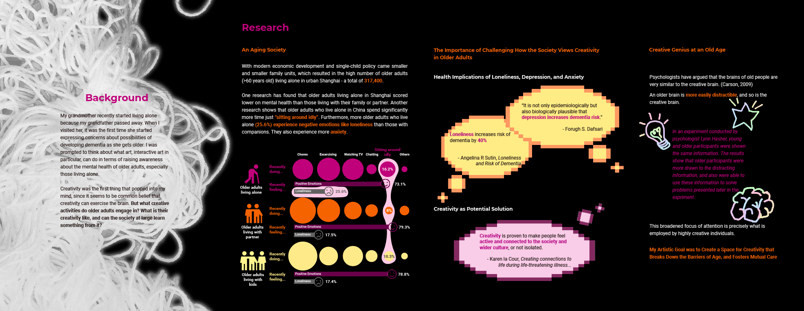
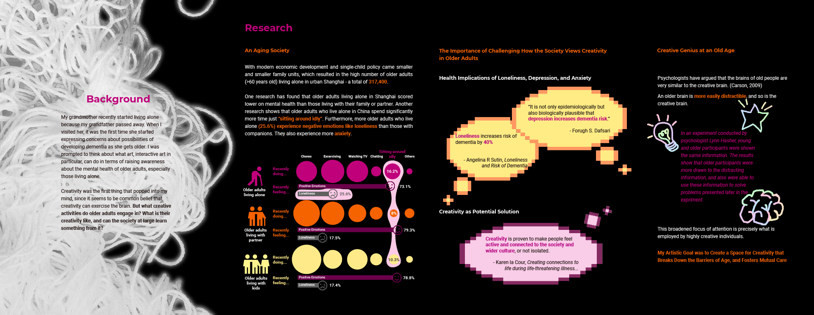
 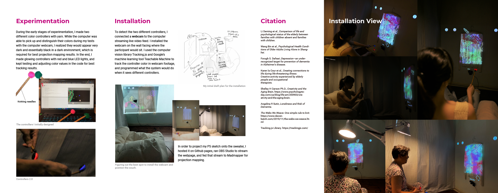
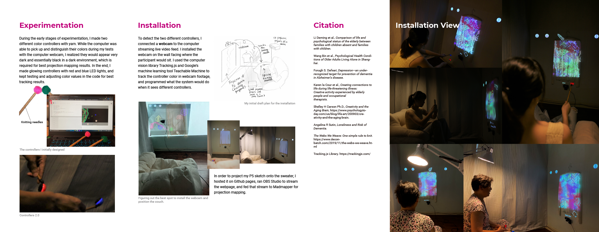
Below is a video documentation of the interactive experience Knitting Care.
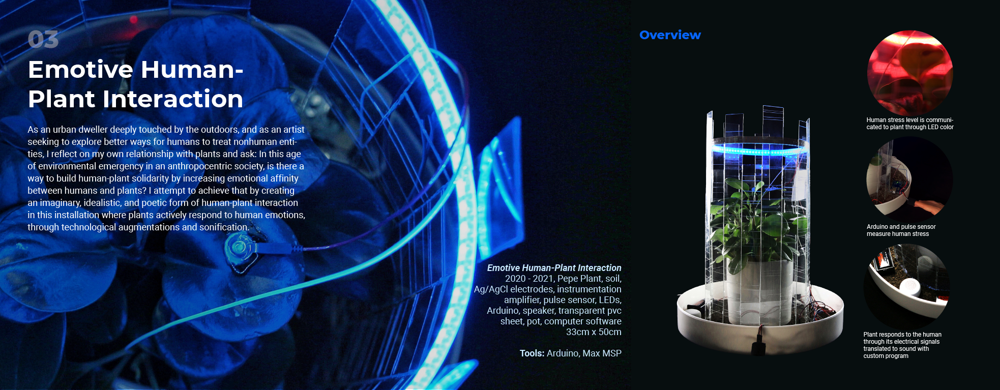 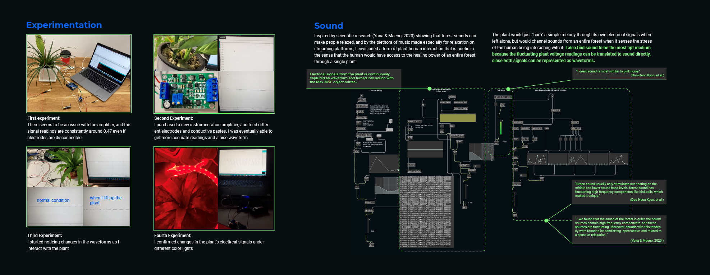 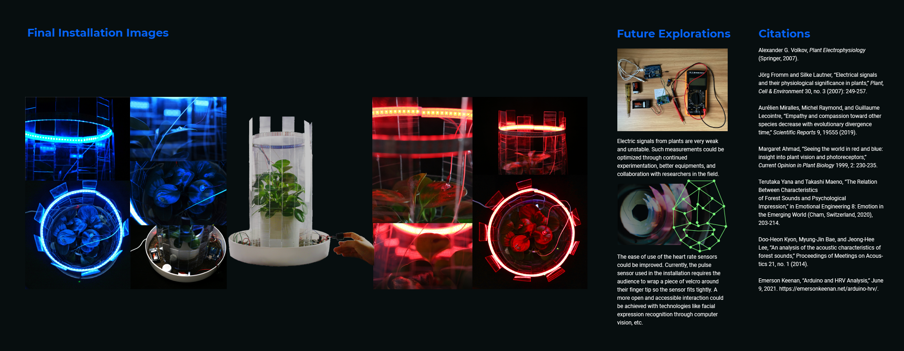Below is a video documentation of the installation Emotive Human-Plant Interaction.
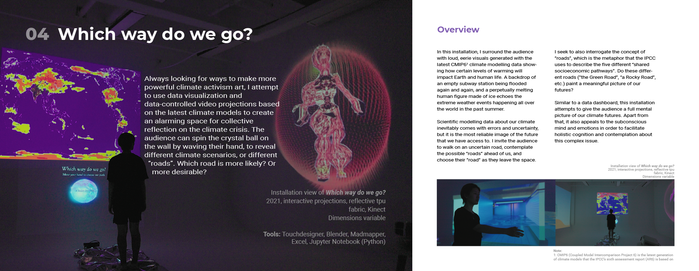 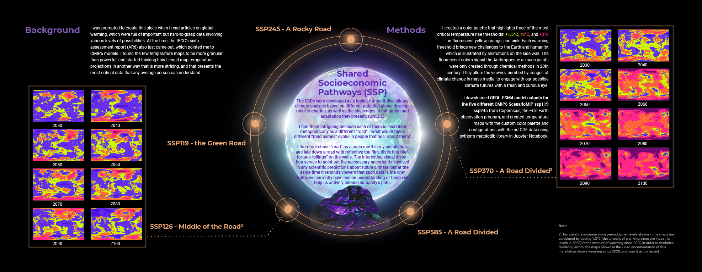 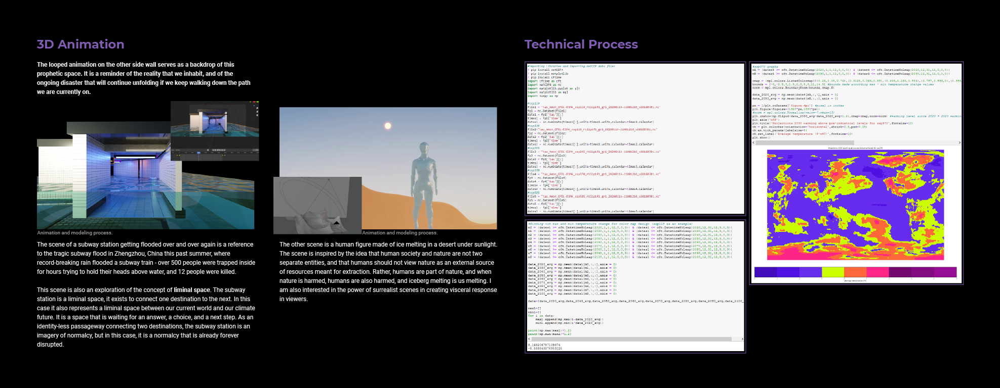
Below is a video documentation of the interactive experience Which way do we go?.
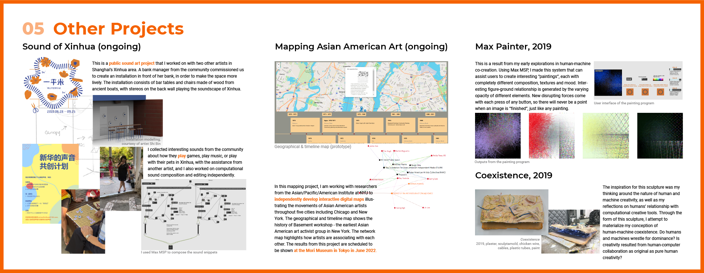 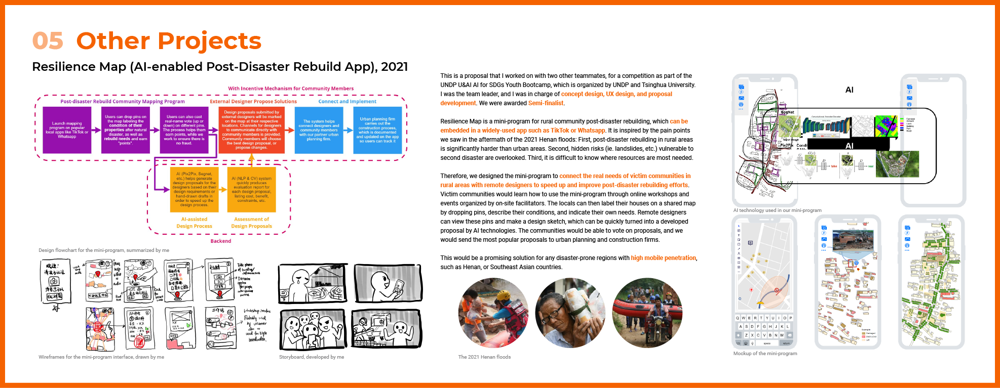